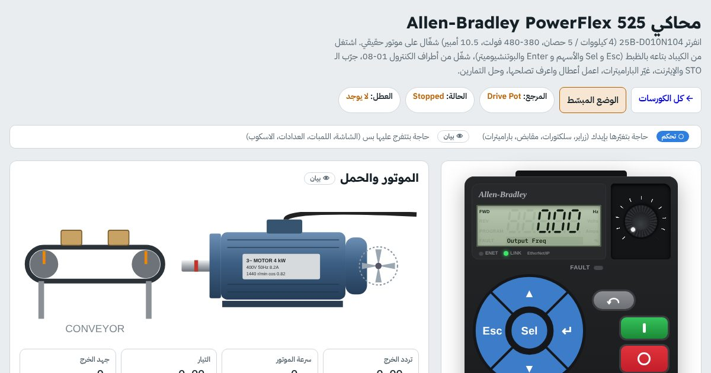

كورس · 16 محاكي انفرتربالعربية
كورس الانفرترات (VFD)
وصّل الانفرتر، واكتب باراميتراته من الكيباد نفسه، وشغّل المحرك، وأصلح أعطاله، على 16 جهازًا من أشهر الماركات.
أول درسين في كورس الشرح مفتوحان للجميع، ومحاكي PowerFlex 525 متاح لكل من لديه حساب

الخطوة 1
ابدأ بالشرح: كورس الانفرتر
12 درسًا تفاعليًا تفهم بها الانفرتر قبل أن تمسك الكيباد. وبعدها الخطوة 2: المحاكيات.
- لماذا الانفرتر؟مفتوح للكل
- ما المشكلة في توصيل المحرك على الشبكة مباشرة؟
- الانفرتر أم طرق التشغيل الأخرى؟
- تمرينمقارنة طرق التشغيل
- كيف يغيّر الانفرتر السرعة؟
- لماذا يوفّر الكهرباء في المضخات والمراوح؟
- تمرينحاسبة التوفير
- تمرينقوانين المضخات
- مثال من الموقع
- أسئلةأسئلة الدرس
- الانفرتر من الداخل
- ماذا يحدث داخل الانفرتر؟
- شاهد هذه المراحل أمامك
- تمرينالانفرتر من الداخل
- كم يكون جهد الـ DC bus؟
- تمريناحسب الـ DC bus
- قبل أن تلمس الانفرتر
- أسئلةأسئلة الدرس
- الـ PWM والـ V/f
- كيف يُخرج الانفرتر موجة sine؟
- شاهد النبضات أمامك
- محاكيمحاكي الـ PWM والـ V/f
- لماذا يجب أن ينخفض الجهد مع التردد؟
- تمريناحسب الجهد
- تردد الكارير: محرك هادئ أم انفرتر بارد؟
- أسئلةأسئلة الدرس
- توصيل القوى
- بماذا يوصَّل كل طرف في القوى؟
- وصّل اللوحة بنفسك
- محاكيلوحة توصيل القوى
- كيف تحمي الانفرتر أثناء توصيله؟
- تمرينصواب أم خطأ؟
- أسئلةأسئلة الدرس
- أطراف التحكم
- الدخل الرقمي (DI): كيف تعطي الأمر؟
- إشارة السرعة (AI): من أين يعرف الانفرتر السرعة؟
- الخرج: كيف يردّ عليك الانفرتر؟
- وصّل وشغّل
- تمرين: من الإشارة إلى التردد
- تمرينإشارة السرعة
- أسئلةأسئلة الدرس
- الباراميترات الأساسية
- قبل أن تغيّر أي باراميتر
- الخطوة الأولى: عرّف الانفرتر بالمحرك
- تمرينمن لوحة البيانات إلى الانفرتر
- الـ Ramp: في كم ثانية يبدأ المحرك ويتوقف؟
- تمريناحسب زمن الـ Ramp
- حدود السرعة، ومن أين تأتي الأوامر؟
- أسئلةأسئلة الدرس
- أوضاع التحكم والـ Autotune
- لماذا تقل السرعة عند تحميل المحرك؟
- 3 أوضاع تحكم: أيها تختار؟
- التحدّي: سير محمّل على سرعة منخفضة
- تمرينأوضاع التحكم
- الـ Autotune: الانفرتر يتعرّف على المحرك
- تمريناختر الوضع المناسب
- أسئلةأسئلة الدرس
- الفرملة والإيقاف
- بأي طريقة يتوقف المحرك؟
- لماذا يظهر عطل OV أثناء الإيقاف؟
- جرّب: أوقف حدافة ثقيلة
- محاكيمحاكي الفرملة
- كيف تركّب مقاومة الفرملة بشكل صحيح؟
- أسئلةأسئلة الدرس
- الـ PID والتطبيقات
- ماذا يفعل الـ PID؟
- جرّب: ضبط مضخة ضغط ثابت
- تمرينمضخة ضغط ثابت بالـ PID
- الـ Sleep والـ Wake: المضخة تستريح وحدها
- كل تطبيق وإعداداته
- تمرينأهم إعداد للتطبيق
- أسئلةأسئلة الدرس
- الأعطال الشائعة وحلولها
- ماذا تفعل قبل الضغط على Reset؟
- كل عطل وسببه
- لعبة: شخّص العطل
- تمرينأعطال من الموقع
- أسئلةأسئلة الدرس
- السلامة والتركيب
- قبل أن تلمس أي طرف
- تمرينرتّب خطوات الأمان
- جرّب: انتظر تفريغ الـ DC bus
- تمرينقِس قبل أن تفتح
- التشويش وكابل المحرك
- الـ Derating: متى يعطي الانفرتر تيارًا أقل؟
- تمريناحسب الـ Derating
- الهارمونيكس: تأثير الانفرتر على الشبكة
- أسئلةأسئلة الدرس
- التشغيل لأول مرة + الامتحان
- بأي ترتيب تشغّل انفرترًا جديدًا؟
- الخطوة التالية: المحاكيات
- أسئلةأسئلة الدرس
- امتحانالامتحان النهائي
الكورس بالأرقام
16محاكي انفرتر من 11 ماركة
6تمارين محلولة خطوة بخطوة في كل محاكي
+900باراميتر مشروح بالعربية
+150كود عطل تُحدثه وتصلحه
الانفرترات
ماذا ستتعلم؟
- توصيل القوى والمحرك وأطراف التحكم دون إتلاف أي شيء
- التنقل في قوائم الكيباد وكتابة الباراميترات بالأزرار نفسها
- إدخال بيانات لوحة بيانات المحرك وتنفيذ Autotune
- التشغيل من الكيباد ومن الأطراف 2-Wire و3-Wire
- أخذ السرعة من بوتنشيوميتر و0–10V و4–20mA وسرعات ثابتة
- الإيقاف السريع بمقاومة فرملة دون OverVoltage
- إحداث الأعطال بيدك وفهم الكود وسببه وتنفيذ Reset بشكل صحيح
- مقارنة الوظيفة نفسها بين الماركات في المحاكي الشامل
المحتوى
الخطوة 2: التمارين المحلولة في كل محاكي
كل تمرين 4 خطوات: التوصيل، والباراميترات، والتشغيل، وجرّب عطلًا. هذا مثال من PowerFlex 525، وفي كل محاكي تمارين بالفكرة نفسها على جهازه.
- الكيباد + البوتنشيوميتر المركّب على الانفرترأول تشغيل: Start من الكيباد والسرعة من البوتنشيوميتر المركّب على الجهاز
- 2-Wire: سلكتور أمامي/عكسي + بوتنشيوميتر خارجي 0-10Vتشغيل من الأطراف وسرعة من إشارة أنالوج
- 3-Wire: زرّا Start وStop + سلكتور اتجاهزر لحظي والانفرتر يثبّت نفسه
- سرعات ثابتة من سلكتور 4 أوضاعPreset speeds على مداخل ديجيتال
- سرعة 4-20mA من PLC + مصابيح الريلاي وعداد Hzمضخة تأخذ سرعتها من PLC مع مصابيح Ready وFault وRun
- إيقاف سريع بمقاومة فرملة (حمل ثقيل)إيقاف في ثانية ونصف دون عطل OverVoltage
المحاكيات في هذا الكورس
افتح أي محاكي من هنا أو من داخل الكورس.
- Allen-Bradley PowerFlex 525 مفتوح للكل
- Allen-Bradley PowerFlex 40
- Allen-Bradley 1336 PLUS II
- Siemens SINAMICS V20
- Siemens SINAMICS G120
- Schneider Altivar ATV320
- Schneider Altivar ATV630
- ABB ACS580
- Delta VFD-MS300
- Delta VFD-C2000
- Danfoss FC 51
- Danfoss VLT 2800
- Mitsubishi FR-E800
- Yaskawa GA500
- LS iG5A
- INVT GD20
- Fuji FRENIC-Mini
- محاكي المقارنة الشامل (7 انفرترات جنبًا إلى جنب)
لمن؟
لمن هذا الكورس؟
- لفنيي ومهندسي الصيانة الذين يتعاملون مع الانفرترات في العمل
- إذا كان في المصنع جهاز معيّن وتريد تعلّمه قبل أن تلمسه
- للمدربين والمراكز: اعرض المحاكي على البروجيكتور
- بعد إنهاء الكلاسيك كنترول
أسئلة متكررة
قبل أن تسأل
بأي انفرتر أبدأ؟
إذا كانت هذه أول مرة، فابدأ بـ PowerFlex 525 وادخل إلى «ابدأ من هنا». بعد ذلك افتح الجهاز الذي تعمل عليه.
هل الباراميترات مطابقة للمانيوال؟
أرقام الباراميترات والأطراف والأعطال مكتوبة للتدريب، وقد تختلف عن إصدار جهازك. قبل أي إعداد على جهاز حقيقي راجعه في مانيوال الشركة للموديل نفسه.
هل أحتاج إلى حساب؟
محاكي PowerFlex 525 مفتوح للجميع. بقية المحاكيات ضمن الكورس وتحتاج إلى حساب تُنشئه في ثوانٍ ببريدك، ويُحفظ فيه تقدّمك.
هل أكتب الباراميترات بيدي؟
نعم. في الوضع الموجّه تكتب كل باراميتر من الكيباد، ويضع لك المحاكي ✓ بمجرد أن تصبح القيمة صحيحة.
هل يعمل على الموبايل؟
نعم. المحاكيات تعمل على الموبايل، لكن رسم التوصيل وجدول الباراميترات أوضح على شاشة أكبر.
جاهز لتبدأ الانفرترات؟
محاكي PowerFlex 525 متاح لكل من لديه حساب. ادخل الآن وتابع في الوقت المناسب لك، ويُحفظ تقدّمك.